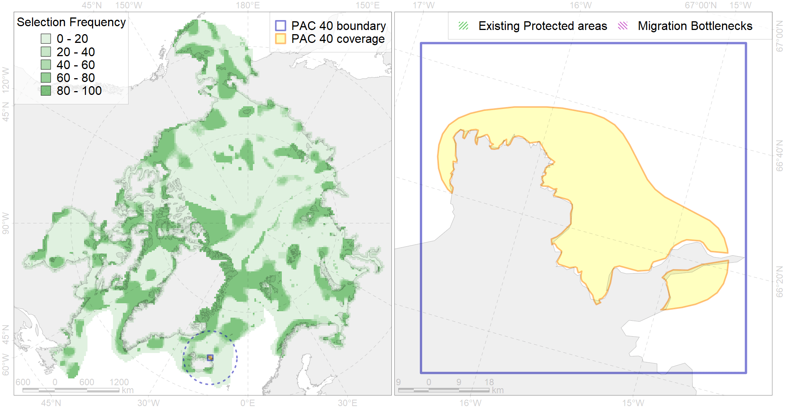

Region 40
Region 40
“ArcNet” scenario 33 achievement for region 40.
Use Accenter for advanced mode.

0
CFs inside of Region completely
0
CFs inside of Region at quarter
0
Complete-targets achievement by Region
0
Half-targets achievement by Region
| CF | Name | Target Achievement for Region | Proportion of Target Achievement in Region | Amount Proportion in Region |
|---|---|---|---|---|
| 6057 | Common eider (Somateria mollissima borealis) Spitsbergen wintering grounds | 25.7% | 25.1% | 19.0% |
| 7248 | seagrasses of Iceland | 13.6% | 7.0% | 6.7% |
| 6060 | Common eider (Somateria mollissima borealis) Iceland breeding&moulting grounds | 7.7% | 7.4% | 5.7% |
| 6054 | Common eider (Somateria mollissima borealis) Iceland wintering grounds | 7.1% | 6.8% | 5.3% |
| 6075 | Common murre (Uria aalge aalge) breeding grounds | 6.7% | 6.4% | 4.6% |
| 7208 | V.1.1. North Iceland shelf | 15.2% | 10.1% | 3.5% |
| 6086 | Long-tailed duck (Clangula hyemalis) Iceland moulting&migration stopovers | 3.6% | 3.5% | 2.6% |
| 6047 | Black-legged kittiwake (Rissa tridactyla pollicarius) breeding colonies | 3.0% | 2.6% | 2.6% |
| 7210 | V.1.1.2. North Iceland glacial troughs | 9.0% | 7.1% | 2.5% |
| 4086 | Fish zoogeography, Arctic Region, Subarctic Transitional-Atlantic Province, Iceland District | 8.9% | 5.4% | 2.5% |
| 7209 | V.1.1.1. North Iceland medium and low profile shelf | 5.8% | 2.7% | 1.1% |
| 5055 | Harbour porpoise feeding areas in Iceland | 13.0% | 2.0% | 1.1% |
| 7029 | Iceland region | 4.9% | 2.2% | 1.0% |
| 5066 | Minke whale feeding areas in the Central Atlantic | 3.8% | 1.2% | 0.6% |
| 7226 | Kelp forests of Iceland | 2.6% | 0.9% | 0.6% |
| 6101 | 6101 Uriaalge aalge breeding colonies | 1.1% | 0.8% | 0.6% |
| 5059 | Humpback whale summer feeding areas in the Eastern Greenland and Iceland | 2.9% | 1.0% | 0.5% |
| 6082 | Thick-billed murre (Uria lomvia lomvia) breeding colonies | 0.5% | 0.4% | 0.5% |
| 4030 | Feeding area of the Arctic charr (Salvelinus alpinus), anadromous populations (F28) | 0.5% | 0.4% | 0.3% |
| 6106 | 6106 Urilomvilomvibreeding colonies | 0.3% | 0.2% | 0.2% |
| 4054 | Range of the Shorthorn Sculpin (Myoxocephalus scorpius) (F 46), European populations | 3.8% | 0.3% | 0.2% |
| 6099 | 6099 Rissa tridactyla tridactyla breeding colonies | 0.2% | 0.2% | 0.1% |
| 4027 | Feeding/migration area of the Atlantic salmon (Salmo salar) American populations (F27) | 0.5% | 0.3% | 0.1% |
| 6002 | Little Auk (Alle alle alle) winetring grounds | 0.4% | 0.3% | 0.1% |
| 2019 | Harbour seal range in the North Atlantic region | 1.5% | 0.2% | 0.1% |
| 6076 | Common murre (Uria aalge aalge) wintering grounds | 0.5% | 0.3% | 0.1% |
| 4049 | Range of the Haddock (Melanogrammus aeglefinus) (F 42) | 1.3% | 0.2% | 0.1% |
| 5098 | White-beaked dolphin feeding area in the Central North Atlantic | 0.6% | 0.2% | 0.1% |
| 4057 | Range of the American Plaice (Hippoglossoides platessoides) (F 47), American populations | 2.6% | 0.2% | 0.1% |
| 6049 | Black-legged kittiwake (Rissa tridactyla tridactyla) wintering grounds | 0.2% | 0.2% | 0.1% |
| 6023 | Atlantic puffin (Fratercula arctica naumanni) wintering grounds | 0.2% | 0.2% | 0.1% |
| 4032 | Range of the Arctic skate (Amblyraja hyperborea) (F2) | 1.9% | 0.1% | 0.1% |
| 4046 | Range of the Thorny Skate (Amblyraja radiata) (F 3) | 0.6% | 0.1% | 0.1% |
| 4045 | Feeding/migration area of the Pink Salmon (Oncorhynchus gorbuscha), native distribution (F23) | 0.6% | 0.1% | 0.1% |
| 6083 | Thick-billed murre (Uria lomvia lomvia) wintering grounds | 0.1% | 0.1% | 0.0% |
| 4003 | Range of the Atlantic Capelin (Mallotus villosus) (F10) | 1.1% | 0.1% | 0.0% |
| 4017 | Feeding/ migration area of the Greenland Shark (Somniosus microcephalus) (F1) | 0.1% | 0.1% | 0.0% |
| 4037 | Distribution of the Glacial cod (Arctogadus glacialis) (F34) | 0.3% | 0.1% | 0.0% |
| 4059 | Range of the Greenland Halibut (Reinhardtius hippoglossoides) (F 49) | 0.8% | 0.1% | 0.0% |
| 4041 | Range of the Polar Cod (Boreogadus saida) (F35) | 0.1% | 0.0% | 0.0% |